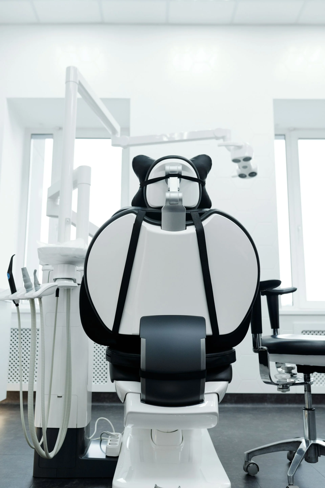
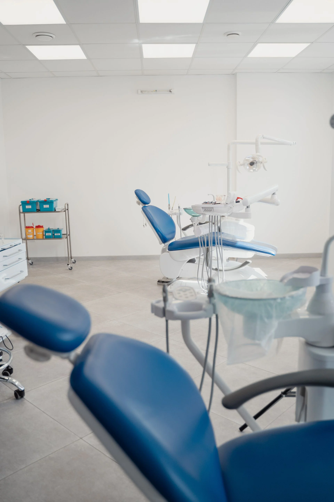

Imagem ilustrativa · não retrata o local ou a equipe
Imagem ilustrativa · não retrata o local ou a equipe01 / Odontologia · CROSP 86.939
Uma clínica que cuida de famílias há mais de uma década.
Clínica Odontológica Dra. Juliana Bofi. A Dra. Juliana Bofi (CROSP 86.939) é cirurgiã-dentista em Potirendaba. Em post comemorativo, conta 19 anos de profissão e 15 de clínica própria.
- Odontologia
- CROSP 86.939
- Potirendaba

Imagem ilustrativa · não retrata o local ou a equipe02 / Conheça a proposta
Odontologia em Potirendaba.
Gengivoplastia
Procedimento que a Dra. Juliana explica em um destaque do perfil. A indicação depende de avaliação.
Lentes de contato dental e clareamento
Cuidados estéticos do sorriso apresentados nos destaques da clínica.
Harmonização orofacial
Área que a clínica também divulga em seu perfil.
Reabilitação com protocolo
Destaque da clínica para quem precisa recuperar função e estética do sorriso. O planejamento é individual.
Biossegurança e dúvidas
A Dra. Juliana mostra os protocolos de biossegurança e responde às dúvidas mais comuns em conteúdos do perfil.
Agendamento
O Google da clínica oferece agendamento on-line, e o WhatsApp também atende.
 Imagem ilustrativa · não retrata o local ou a equipe
Imagem ilustrativa · não retrata o local ou a equipe03 / Trajetória & cuidado
Uma história de 15 anos de clínica própria.
A Dra. Juliana Bofi se apresenta como cirurgiã-dentista (CROSP 86.939) e conta, no Instagram, 19 anos de profissão e 15 de clínica própria em Potirendaba. Pacientes citam a atenção da recepção e da equipe, além das explicações da Dra. Juliana sobre cada procedimento.
- 19 anos de profissão e 15 de clínica própria, segundo ela mesma
- CROSP 86.939 informado na bio
- Agendamento on-line disponível no Google
- Nota 4,9 nas avaliações do Google

Imagem ilustrativa · não retrata o local ou a equipe04 / Seu próximo passo
Vamos conversar?
Consulte horários, disponibilidade e condições pelo WhatsApp.
Odontologia · CROSP 86.939